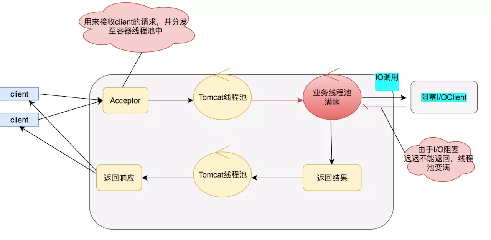

今天来聊聊如何让项目异步化的一些事。
1. 同步和异步，阻塞和非阻塞
同步和异步，阻塞和非阻塞, 这个几个词已经是老生常谈，但是常常还是有很多同学分不清楚，以为同步肯定就是阻塞，异步肯定就是非阻塞，其实他们不是一回事。
同步和异步关注的是结果消息的通信机制
- 同步: 同步的意思就是调用方需要主动等待结果的返回
- 异步: 异步的意思就是不需要主动等待结果的返回，而是通过其他手段比如，状态通知，回调函数等。
阻塞和非阻塞主要关注的是等待结果返回调用方的状态
- 阻塞: 是指结果返回之前，当前线程被挂起，不做任何事
- 非阻塞: 是指结果在返回之前，线程可以做一些其他事，不会被挂起。
可以看见同步和异步，阻塞和非阻塞主要关注的点不同，有人会问同步还能非阻塞，异步还能阻塞？当然是可以的，下面为了更好的说明他们的组合之间的意思，用几个简单的例子说明: 1. 同步阻塞: 同步阻塞基本也是编程中最常见的模型，打个比方你去商店买衣服，你去了之后发现衣服卖完了，那你就在店里面一直等，期间不做任何事 (包括看手机)，等着商家进货，直到有货为止，这个效率很低。
2. 同步非阻塞: 同步非阻塞在编程中可以抽象为一个轮询模式，你去了商店之后，发现衣服卖完了，这个时候不需要傻傻的等着，你可以去其他地方比如奶茶店，买杯水，但是你还是需要时不时的去商店问老板新衣服到了吗。
3. 异步阻塞: 异步阻塞这个编程里面用的较少，有点类似你写了个线程池, submit 然后马上 future.get()，这样线程其实还是挂起的。有点像你去商店买衣服，这个时候发现衣服没有了，这个时候你就给老板留给电话，说衣服到了就给我打电话，然后你就守着这个电话，一直等着他响什么事也不做。这样感觉的确有点傻，所以这个模式用得比较少。
4. 异步非阻塞: 异步非阻塞这也是现在高并发编程的一个核心，也是今天主要讲的一个核心。好比你去商店买衣服，衣服没了，你只需要给老板说这是我的电话，衣服到了就打。然后你就随心所欲的去玩，也不用操心衣服什么时候到，衣服一到，电话一响就可以去买衣服了。
2. 同步阻塞 PK 异步非阻塞
上面已经看到了同步阻塞的效率是多么的低，如果使用同步阻塞的方式去买衣服，你有可能一天只能买一件衣服，其他什么事都不能干，如果用异步非阻塞的方式去买，买衣服只是你一天中进行的一个小事。
我们把这个映射到我们代码中，当我们的线程发生一次 rpc 调用或者 http 调用，又或者其他的一些耗时的 IO 调用，发起之后，如果是同步阻塞，我们的这个线程就会被阻塞挂起，直到结果返回，试想一下如果 IO 调用很频繁那我们的 CPU 使用率其实是很低很低。正所谓是物尽其用，既然 CPU 的使用率被 IO 调用搞得很低，那我们就可以使用异步非阻塞，当发生 IO 调用时我并不马上关心结果，我只需要把回调函数写入这次 IO 调用，我这个时候线程可以继续处理新的请求，当 IO 调用结束结束时，会调用回调函数。而我们的线程始终处于忙碌之中，这样就能做更多的有意义的事了。
这里首先要说明的是，异步化不是万能，异步化并不能缩短你整个链路调用时间长的问题，但是他能极大的提升你的最大 qps。一般我们的业务中有两处比较耗时:
- cpu: cpu 耗时指的是我们的一般的业务处理逻辑，比如一些数据的运算，对象的序列化。这些异步化是不能解决的，得需要靠一些算法的优化，或者一些高性能框架。
- iowait: io 耗时就像我们上面说的, 一般发生在网络调用，文件传输中等等，这个时候线程一般会挂起阻塞。而我们的异步化通常用于解决这部分的问题。
3. 哪些可以异步化？
上面说了异步化是用于解决 IO 阻塞的问题，而我们一般项目中可以使用异步化如下:
- servlet 异步化, springmvc 异步化
- rpc 调用如 (dubbo,thrift),http 调用异步化
- 数据库调用，缓存调用异步化
下面我会从上面几个方面进行异步化的介绍.
4.servlet 异步化
对于 Java 开发程序员来说 servlet 并不陌生吧，在项目中不论你使用 struts2, 还是使用的 springmvc, 本质上都是封装的 servlet。但是我们的一般的开发，其实都是使用的同步阻塞模式如下:
上面的模式优点在于编码简单，适合在项目启动初期，访问量较少，或者是 CPU 运算较多的项目
缺点在于，业务逻辑线程和 servlet 容器线程是同一个，一般的业务逻辑总得发生点 IO，比如查询数据库，比如产生 RPC 调用，这个时候就会发生阻塞，而我们的 servlet 容器线程肯定是有限的，当 servlet 容器线程都被阻塞的时候我们的服务这个时候就会发生拒绝访问，线程不然我当然们可以通过增加机器的一系列手段来解决这个问题，但是俗话说得好靠人不如靠自己，靠别人替我分担请求，还不如我自己搞定。所以在 servlet3.0 之后支持了异步化，我们采用异步化之后就会变成如下:
在这里我们采用新的线程处理业务逻辑，IO 调用的阻塞就不会影响我们的 serlvet 了，实现异步 serlvet 的代码也比较简单, 如下:
@WebServlet(name = "WorkServlet",urlPatterns = "/work",asyncSupported =true)
public class WorkServlet extends HttpServlet{
private static final long serialVersionUID = 1L;
@Override
protected void doGet(HttpServletRequest req, HttpServletResponse resp) throws ServletException, IOException {
this.doPost(req, resp);
}
@Override
protected void doPost(HttpServletRequest req, HttpServletResponse resp) throws ServletException, IOException {
//设置ContentType,关闭缓存
resp.setContentType("text/plain;charset=UTF-8");
resp.setHeader("Cache-Control","private");
resp.setHeader("Pragma","no-cache");
final PrintWriter writer= resp.getWriter();
writer.println("老师检查作业了");
writer.flush();
List<String> zuoyes=new ArrayList<String>();
for (int i = 0; i < 10; i++) {
zuoyes.add("zuoye"+i);;
}
//开启异步请求
final AsyncContext ac=req.startAsync();
doZuoye(ac, zuoyes);
writer.println("老师布置作业");
writer.flush();
}
private void doZuoye(final AsyncContext ac, final List<String> zuoyes) {
ac.setTimeout(1*60*60*1000L);
ac.start(new Runnable() {
@Override
public void run() {
//通过response获得字符输出流
try {
PrintWriter writer=ac.getResponse().getWriter();
for (String zuoye:zuoyes) {
writer.println("\""+zuoye+"\"请求处理中");
Thread.sleep(1*1000L);
writer.flush();
}
ac.complete();
} catch (Exception e) {
e.printStackTrace();
}
}
});
}
}
实现 serlvet 的关键在于 http 采取了长连接，也就是当请求打过来的时候就算有返回也不会关闭，因为可能还会有数据，直到返回关闭指令。 AsyncContext ac=req.startAsync(); 用于获取异步上下文，后续我们通过这个异步上下文进行回调返回数据，有点像我们买衣服的时候，给老板一个电话，而这个上下文也是一个电话，当有衣服到的时候，也就是当有数据准备好的时候就可以打电话发送数据了。 ac.complete(); 用来进行长链接的关闭。
4.1springmvc 异步化
现在其实很少人来进行 serlvet 编程，都是直接采用现成的一些框架，比如 struts2，springmvc。下面介绍下使用 springmvc 如何进行异步化:
- 首先确认你的项目中的 Servlet 是 3.0 以上的！！，其次 springMVC4.0+
<dependency>
<groupId>javax.servlet</groupId>
<artifactId>javax.servlet-api</artifactId>
<version>3.1.0</version>
<scope>provided</scope>
</dependency>
<dependency>
<groupId>org.springframework</groupId>
<artifactId>spring-webmvc</artifactId>
<version>4.2.3.RELEASE</version>
</dependency>
- web.xml 头部声明，必须要 3.0,filter 和 serverlet 设置为异步
<?xml version="1.0" encoding="UTF-8"?>
<web-app version="3.0" xmlns="http://java.sun.com/xml/ns/javaee"
xmlns:xsi="http://www.w3.org/2001/XMLSchema-instance"
xsi:schemaLocation="http://java.sun.com/xml/ns/javaee
http://java.sun.com/xml/ns/javaee/web-app_3_0.xsd">
<filter>
<filter-name>testFilter</filter-name>
<filter-class>com.TestFilter</filter-class>
<async-supported>true</async-supported>
</filter>
<servlet>
<servlet-name>mvc-dispatcher</servlet-name>
<servlet-class>org.springframework.web.servlet.DispatcherServlet</servlet-class>
.........
<async-supported>true</async-supported>
</servlet>
- 使用 springmvc 封装了 servlet 的 AsyncContext，使用起来比较简单。以前我们同步的模式的 Controller 是返回额 ModelAndView，而异步模式直接生成一个 defrredResult(支持我们超时扩展) 即可保存上下文, 下面给出如何和我们 HttpClient 搭配的简单 demo
@RequestMapping(value="/asynctask", method = RequestMethod.GET)
public DeferredResult<String> asyncTask() throws IOReactorException {
IOReactorConfig ioReactorConfig = IOReactorConfig.custom().setIoThreadCount(1).build();
ConnectingIOReactor ioReactor = new DefaultConnectingIOReactor(ioReactorConfig);
PoolingNHttpClientConnectionManager conManager = new PoolingNHttpClientConnectionManager(ioReactor);
conManager.setMaxTotal(100);
conManager.setDefaultMaxPerRoute(100);
CloseableHttpAsyncClient httpclient = HttpAsyncClients.custom().setConnectionManager(conManager).build();
// Start the client
httpclient.start();
//设置超时时间200ms
final DeferredResult<String> deferredResult = new DeferredResult<String>(200L);
deferredResult.onTimeout(new Runnable() {
@Override
public void run() {
System.out.println("异步调用执行超时！thread id is : " + Thread.currentThread().getId());
deferredResult.setResult("超时了");
}
});
System.out.println("/asynctask 调用！thread id is : " + Thread.currentThread().getId());
final HttpGet request2 = new HttpGet("http://www.apache.org/");
httpclient.execute(request2, new FutureCallback<HttpResponse>() {
public void completed(final HttpResponse response2) {
System.out.println(request2.getRequestLine() + "->" + response2.getStatusLine());
deferredResult.setResult(request2.getRequestLine() + "->" + response2.getStatusLine());
}
public void failed(final Exception ex) {
System.out.println(request2.getRequestLine() + "->" + ex);
}
public void cancelled() {
System.out.println(request2.getRequestLine() + " cancelled");
}
});
return deferredResult;
}
注意: 在 serlvet 异步化中有个问题是 filter 的后置结果处理，没法使用，对于我们一些打点，结果统计直接使用 serlvet 异步是没法用的。在 springmvc 中就很好的解决了这个问题，springmvc 采用了一个比较取巧的方式通过请求转发，能让请求再次过滤器。但是又引入了新的一个问题那就是过滤器会处理两次，这里可以通过 SpringMVC 源码中自身判断的方法，我们可以在 filter 中使用下面这句话来进行判断是不是属于 springmvc 转发过来的请求，从而不处理 filter 的前置事件，只处理后置事件:
Object asyncManagerAttr = servletRequest.getAttribute(WEB_ASYNC_MANAGER_ATTRIBUTE);
return asyncManagerAttr instanceof WebAsyncManager ;
复制代码
5. 全链路异步化
上面我们介绍了 serlvet 的异步化，相信细心的同学都看出来似乎并没有解决根本的问题，我的 IO 阻塞依然存在，只是换了个位置而已，当 IO 调用频繁同样会让业务线程池快速变满，虽然 serlvet 容器线程不被阻塞，但是这个业务依然会变得不可用。

那么怎么才能解决上面的问题呢？答案就是全链路异步化，全链路异步追求的是没有阻塞，打满你的 CPU, 把机器的性能压榨到极致模型图如下:
具体的 NIO client 到底做了什么事呢，具体如下面模型：
上面就是我们全链路异步的图了 (部分线程池可以优化)。全链路的核心在于只要我们遇到 IO 调用的时候，我们就可以使用 NIO，从而避免阻塞，也就解决了之前说的业务线程池被打满得到尴尬场景。
5.1 远程调用异步化
我们一般远程调用使用 rpc 或者 http。对于 rpc 来说一般 thrift,http,motan 等支持都异步调用，其内部原理也都是采用事件驱动的 NIO 模型，对于 http 来说一般的 apachehttpclient 和 okhttp 也都提供了异步调用。 下面简单介绍下 Http 异步化调用是怎么做的: 首先来看一个例子:
public class HTTPAsyncClientDemo {
public static void main(String[] args) throws ExecutionException, InterruptedException, IOReactorException {
//具体参数含义下文会讲
//apache提供了ioReactor的参数配置，这里我们配置IO 线程为1
IOReactorConfig ioReactorConfig = IOReactorConfig.custom().setIoThreadCount(1).build();
//根据这个配置创建一个ioReactor
ConnectingIOReactor ioReactor = new DefaultConnectingIOReactor(ioReactorConfig);
//asyncHttpClient使用PoolingNHttpClientConnectionManager管理我们客户端连接
PoolingNHttpClientConnectionManager conManager = new PoolingNHttpClientConnectionManager(ioReactor);
//设置总共的连接的最大数量
conManager.setMaxTotal(100);
//设置每个路由的连接的最大数量
conManager.setDefaultMaxPerRoute(100);
//创建一个Client
CloseableHttpAsyncClient httpclient = HttpAsyncClients.custom().setConnectionManager(conManager).build();
// Start the client
httpclient.start();
// Execute request
final HttpGet request1 = new HttpGet("http://www.apache.org/");
Future<HttpResponse> future = httpclient.execute(request1, null);
// and wait until a response is received
HttpResponse response1 = future.get();
System.out.println(request1.getRequestLine() + "->" + response1.getStatusLine());
// One most likely would want to use a callback for operation result
final HttpGet request2 = new HttpGet("http://www.apache.org/");
httpclient.execute(request2, new FutureCallback<HttpResponse>() {
//Complete成功后会回调这个方法
public void completed(final HttpResponse response2) {
System.out.println(request2.getRequestLine() + "->" + response2.getStatusLine());
}
public void failed(final Exception ex) {
System.out.println(request2.getRequestLine() + "->" + ex);
}
public void cancelled() {
System.out.println(request2.getRequestLine() + " cancelled");
}
});
}
}
下面给出 httpAsync 的整个类图:
对于我们的 HTTPAysncClient 其实最后使用的是 InternalHttpAsyncClient, 在 InternalHttpAsyncClient 中有个 ConnectionManager，这个就是我们管理连接的管理器，而在 httpAsync 中只有一个实现那就是 PoolingNHttpClientConnectionManager, 这个连接管理器中有两个我们比较关心的一个是 Reactor, 一个是 Cpool。
Reactor : 所有的 Reactor 这里都是实现了 IOReactor 接口。在 PoolingNHttpClientConnectionManager 中会有拥有一个 Reactor，那就是 DefaultConnectingIOReactor, 这个 DefaultConnectingIOReactor, 负责处理 Acceptor。在 DefaultConnectingIOReactor 有个 excutor 方法，生成 IOReactor 也就是我们图中的 BaseIOReactor，进行 IO 的操作。这个模型就是我们上面的 1.2.2 的模型
CPool : 在 PoolingNHttpClientConnectionManager 中有个 CPool，主要是负责控制我们连接，我们上面所说的 maxTotal 和 defaultMaxPerRoute，都是由其进行控制，如果每个路由的满了他会断开最老的一个链接，如果总共的 total 满了他会放入 leased 队列，释放空间的时候就会将其重新连接。
5.2 数据库调用异步化
对于数据库调用一般的框架并没有提供异步化的方法，这里推荐自己封装或者使用网上开源的，这里我们公司有个开源的 https://github.com/ainilife/zebra-dao/blob/master/README_ZH.md 能很好的支持异步化
6. 最后
异步化并不是高并发的银弹，但是有了异步化的确能提高你机器的 qps，吞吐量等等。上述讲的一些模型如果能合理的做一些优化，然后进行应用，相信能对你的服务有很大的帮助的。